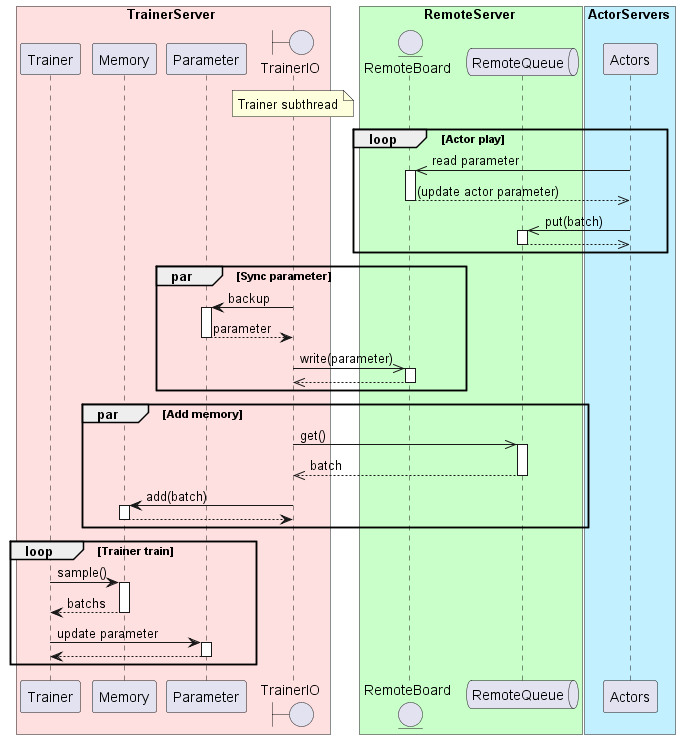

Distributed Learning (Multiple PCs)
ここではネットワーク経由で学習する方法を説明します。概要は以下です。

フローイメージは以下です。
各サーバとのやりとりのイメージは以下です。

学習を実行するまでのステップは大きく以下となります。
必要なライブラリのインストール(初回のみ)
Redisの起動
TrainerServer/ActorServerの起動
学習の実施
0. 必要なライブラリのインストール
RedisとRabbitMQ用のライブラリをインストールします。
$ pip install redis pika
1. Redis/RabbitMQサーバの起動
RedisサーバとRabbitMQサーバを用意します。（RabbitMQはオプション）
サンプルにdocker-composeファイルを用意してるので、そちらの起動でも大丈夫です。
（DockerComposeが実行できる環境である必要があります）
$ docker-compose -f examples/distribution/docker-compose.yml up -d
2. TrainerServer/ActorServerの起動
TrainerServerとActorServerを任意のPCで起動します。
基本はTrainerServerは1個、ActorServerは1個以上(actor_num数)の起動を想定しています。
※各TrainerServer/ActorServerでも、EnvとAlgorithmが使用できる必要があります
※RabbitMQサーバがない場合は第2引数をNoneにしてください
TrainerServerの起動例です。(examples/distribution/server_trainer.py)
from srl.runner.distribution import RabbitMQParameters, RedisParameters, trainer_run_forever
def main():
trainer_run_forever(
RedisParameters(host="localhost"),
RabbitMQParameters(host="localhost", ssl=False),
)
if __name__ == "__main__":
main()
ActorServerの起動例です。(examples/distribution/server_actor.py)
from srl.runner.distribution import RabbitMQParameters, RedisParameters, actor_run_forever
def main():
actor_run_forever(
RedisParameters(host="localhost"),
RabbitMQParameters(host="localhost", ssl=False),
)
if __name__ == "__main__":
main()
3. 学習の実施
学習のサンプルコードは以下です。Runnerから train_distribution を呼び出すと学習します。
学習後はrunner内のparameterに学習済みデータが入っています。
import srl
from srl.algorithms import ql
from srl.runner.distribution import RedisParameters
from srl.utils import common
def main():
env_config = srl.EnvConfig("Grid")
rl_config = ql.Config()
runner = srl.Runner(env_config, rl_config)
runner.train_distribution(
RedisParameters(host="localhost"),
max_train_count=1000,
)
print(runner.evaluate())
if __name__ == "__main__":
common.logger_print()
main()